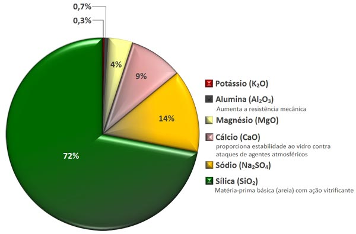
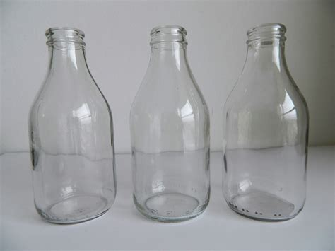
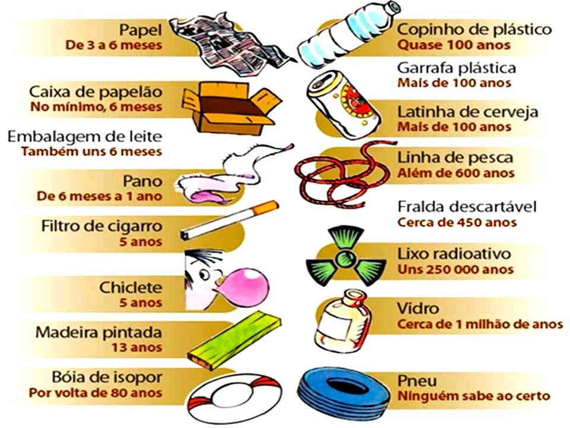
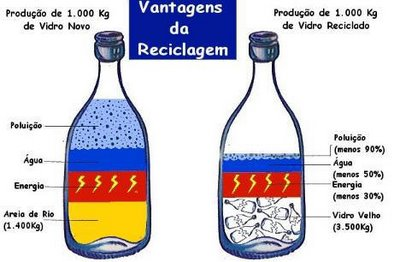
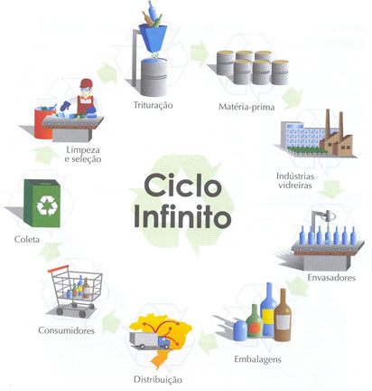

O vidro é um agregado de matérias-primas naturais e de grande quantidade no mundo, tais como a areia (sílica), a barrilha e o calcário, alumina e corantes ou descorantes (para colorir o material final). Além disso, normalmente são utilizados cacos de vidro na produção do mesmo, reduzindo o uso de matérias-primas e consumindo menos energia, tornando ainda mais sustentável.
O vidro é o único produto completamente reciclável do planeta. Ele é um sólido não cristalino, ou seja, apesar de ser um sólido, sua estrutura microscópica é desordenada, diferente de outros tipos de sólidos, que tem estrutura periodicamente organizada.
Sílica (areia): extraído normalmente através de poços abertos ou minada de praias, dunas leitos oceânicos e córregos.
Calcário: retirada de pedreiras. De acordo com o site da "solancis", uma empresa especializada em extração de calcário, o processo é feito da seguinte maneira: "Dependendo da orientação da superfície, há duas formas de iniciar a extração. Se a superfície for horizontal, é feita uma primeira cavidade para a inserção do serrote e consequente corte na horizontal, permitindo assim a extração de blocos de pedra maiores.
Quando a superfície é vertical ou ligeiramente inclinada, a exploração inicia-se cortando a rocha na vertical e depois pela sua base. Fica um pedaço de rocha separado da bancada (talhada) que pode chegar até às 500 toneladas."
O vidro existe e é utilizado a milhares de anos pela humanidade, e pode ser moldado como se bem entender. No entanto, junto à evolução da tecnologia, os usos do vidro foram se variando mais e mais, acelerando sua produção, e hoje o vidro pode ser encontrado em inúmeras maneiras, tais como: garrafas, lâmpadas, lentes, janelas, relógios, mesas, telas de televisão e monitores, janelas de automóveis, itens para decoração, fibra ótica, etc.
De acordo com o website da UNICEF, o vidro leva de 4 mil a 1 milhão de anos para se decompor, dependendo das condições às quais o material é sujeito. Dos materiais que podem ser retirados do meio ambiente e reciclados, o vidro é o que leva mais tempo para se decompor, já que sua composição o faz extremamente resistente às alterações climáticas.
A produção do vidro a partir da matéria-prima requer muita energia e um tempo para fabricação muito maior que o processo quando se utiliza de vidro reciclado, dois pontos que tornam a reciclagem do vidro um processo altamente viável financeiramente.
Por ser um material com uma duração altíssima, e que demora milênios para se decompor naturalmente, a reciclagem do vidro se tornou (ainda mais considerando a escala de uso, globalmente falando) imprescindível.
Através da reciclagem do vidro, além de serem utilizadas toneladas de materiais recicláveis que seriam despejados na natureza, diminui-se em cerca de até 90% da poluição (que seria gerada na produção de vidro completamente novo), e são consumidas até 50% menos água e até 30% menos energia no processo. Isso quer dizer que a reciclagem do vidro não só acaba sendo bom para o meio-ambiente, como também para a qualidade de vida da população, já que haverá mais água, energia e melhor qualidade de ar.
A reciclagem do vidro começa pela coleta seletiva. É através dela que o vidro que não está mais sendo utilizado é coletado e reutilizado. Entretanto, a falta de conscientização da população e a falta de postos de coleta dificulta e muito a coleta desse material.
Após a coleta, os vidros são separados por cores (âmbar, verde, translúcido e azul) e tipos (lisos, ondulados, vidros de janelas, de copos, etc). Esse processo acaba por garantir as características e qualidades dos produtos que serão produzidos pela reutilização desses materiais
Separados, os materiais têm dois normalmente dois destinos: a moagem e o derretimento.
Na moagem, o vidro é triturado ou moído, e muitas vezes adicionado ao concreto, reforçando a sua estrutura (agindo como um aglomerante). Porém pesquisas mais avançadas estão sendo realizadas quanto a viabilidade desse uso, já que a sílica (um dos materiais para a produção do vidro), pode reagir com água, podendo enfraquecer a estrutura.
Já no derretimento, o material passa por um processo onde o mesmo é aquecido até seu ponto de fusão e depois aproveitado para a fabricação de novos produtos (na maioria das vezes o material é triturado de forma rápida antes de ser aquecido, diferentemente do processo de moagem acima, onde ele é triturado em pedaços menores e ou moídos a quase pó).
